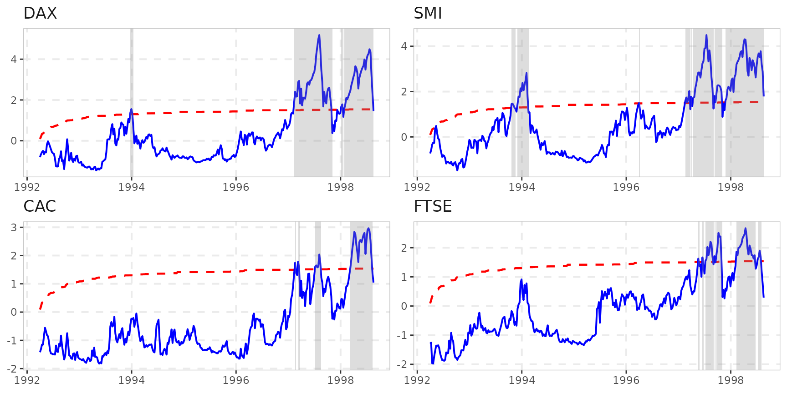
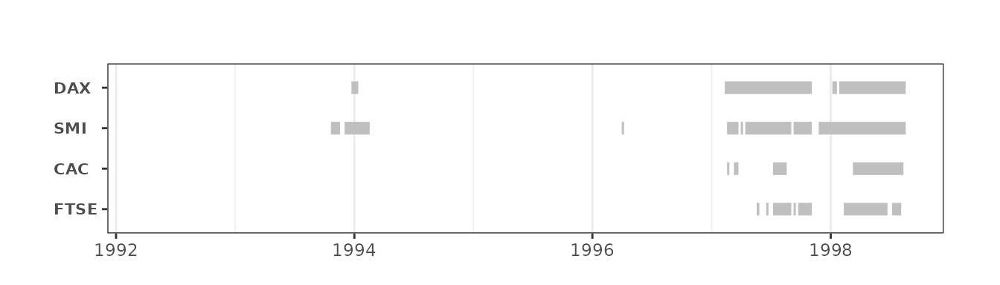

For our analysis we are going to use the
datasets::EuStockMarkets dataset, which contains the daily
closing prices of four major European stock indices: Germany DAX,
Switzerland SMI, France CAC, and UK FTSE (see
?EuStockMarkets). The data are sampled in business time,
i.e., weekends and holidays are omitted. In this particular exercise we
want to focus on weekly observations. To do so we aggregate to a weekly
frequency and reduce the number of observations from 1860 to 372.
stocks <- aggregate(EuStockMarkets, nfrequency = 52, mean)Estimation
We estimate the above series using the recursive Augmented Dickey-Fuller test with 1 lag.
est_stocks <- radf(stocks, lag = 1)Analysis
The summary will print the test statistic and the critical values for
10%, 5% and 1% significance level. For a plain recursive ADF
(lag = 0) and up to 600 observations, the package ships
pre-simulated critical values that
summary()/diagnostics()/datestamp()/autoplot()
use automatically when cv is omitted. With
lag = 1 (as estimated above), critical values instead need
to be simulated for this specific (n, lag) combination –
radf_mc_cv() does that locally, and we pass the result via
cv to every downstream call.
cv_stocks <- radf_mc_cv(NROW(stocks), lag = 1)
summary(est_stocks, cv = cv_stocks)
#>
#> ── Summary (minw = 38, lag = 1) ────────────────── Monte Carlo (nboot = 1000) ──
#>
#> DAX :
#> # A tibble: 3 × 5
#> stat tstat `90` `95` `99`
#> <fct> <dbl> <dbl> <dbl> <dbl>
#> 1 adf 1.45 -0.440 -0.0429 0.537
#> 2 sadf 4.95 1.23 1.54 2.06
#> 3 gsadf 5.18 2.13 2.38 3.00
#>
#> SMI :
#> # A tibble: 3 × 5
#> stat tstat `90` `95` `99`
#> <fct> <dbl> <dbl> <dbl> <dbl>
#> 1 adf 1.77 -0.440 -0.0429 0.537
#> 2 sadf 4.28 1.23 1.54 2.06
#> 3 gsadf 4.49 2.13 2.38 3.00
#>
#> CAC :
#> # A tibble: 3 × 5
#> stat tstat `90` `95` `99`
#> <fct> <dbl> <dbl> <dbl> <dbl>
#> 1 adf 0.987 -0.440 -0.0429 0.537
#> 2 sadf 2.91 1.23 1.54 2.06
#> 3 gsadf 2.97 2.13 2.38 3.00
#>
#> FTSE :
#> # A tibble: 3 × 5
#> stat tstat `90` `95` `99`
#> <fct> <dbl> <dbl> <dbl> <dbl>
#> 1 adf 0.194 -0.440 -0.0429 0.537
#> 2 sadf 2.56 1.23 1.54 2.06
#> 3 gsadf 2.67 2.13 2.38 3.00It seems that all stocks exhibit exuberant behaviour but we can also
verify it using diagnostics(). This function is
particularly useful when we deal a large number of series.
diagnostics(est_stocks, cv = cv_stocks)
#>
#> ── Diagnostics (option = gsadf) ───────────────────────────────── Monte Carlo ──
#>
#> DAX: Rejects H0 at the 1% significance level
#> SMI: Rejects H0 at the 1% significance level
#> CAC: Rejects H0 at the 5% significance level
#> FTSE: Rejects H0 at the 5% significance levelIf we need to know the exact period of exuberance we can do so with
the function datestamp(). datestamp() works in
a similar manner with summary() and
diagnostics().
# Minimum duration of an explosive period
rot = psy_ds(stocks) # log(n) ~ rule of thumb
dstamp_stocks <- datestamp(est_stocks, cv = cv_stocks, min_duration = rot)
dstamp_stocks
#>
#> ── Datestamp (min_duration = 6) ───────────────────────────────── Monte Carlo ──
#>
#> DAX :
#> Start Peak End Duration Signal Ongoing
#> 1 1997-02-10 1997-08-05 1997-11-04 38 positive FALSE
#> 2 1998-01-27 1998-07-22 1998-08-19 29 positive FALSE
#>
#> SMI :
#> Start Peak End Duration Signal Ongoing
#> 1 1993-12-02 1994-02-03 1994-02-17 11 positive FALSE
#> 2 1997-04-14 1997-07-15 1997-09-02 20 positive FALSE
#> 3 1997-09-09 1997-10-07 1997-11-04 8 positive FALSE
#> 4 1997-11-25 1998-04-07 1998-08-19 39 positive TRUE
#>
#> CAC :
#> Start Peak End Duration Signal Ongoing
#> 1 1997-07-08 1997-08-05 1997-08-19 6 positive FALSE
#> 2 1998-03-10 1998-07-15 1998-08-12 22 positive FALSE
#>
#> FTSE :
#> Start Peak End Duration Signal Ongoing
#> 1 1997-07-08 1997-08-12 1997-09-02 8 positive FALSE
#> 2 1997-09-23 1997-10-07 1997-11-04 6 positive FALSE
#> 3 1998-02-10 1998-04-14 1998-06-24 19 positive FALSEWe can extract the datestamp as a dummy variable 1 = Exuberance, 0 = No exuberance.
Plotting
The autoplot function returns a faceted ggplot2 object
for all the series that reject the null hypothesis at 5% significance
level.
autoplot(est_stocks, cv = cv_stocks)
#> Warning: Using `size` aesthetic for lines was deprecated in ggplot2 3.4.0.
#> ℹ Please use `linewidth` instead.
#> ℹ The deprecated feature was likely used in the exuber package.
#> Please report the issue at <https://github.com/kvasilopoulos/exuber/issues>.
#> This warning is displayed once per session.
#> Call `lifecycle::last_lifecycle_warnings()` to see where this warning was
#> generated.
Finally, we can plot just the periods the periods of exuberance. Plotting datestamp object is particularly useful when we have a lot of series, and we are interested to identify explosive patterns in all of them.
